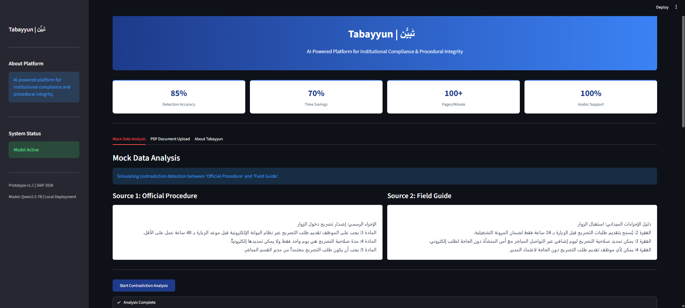
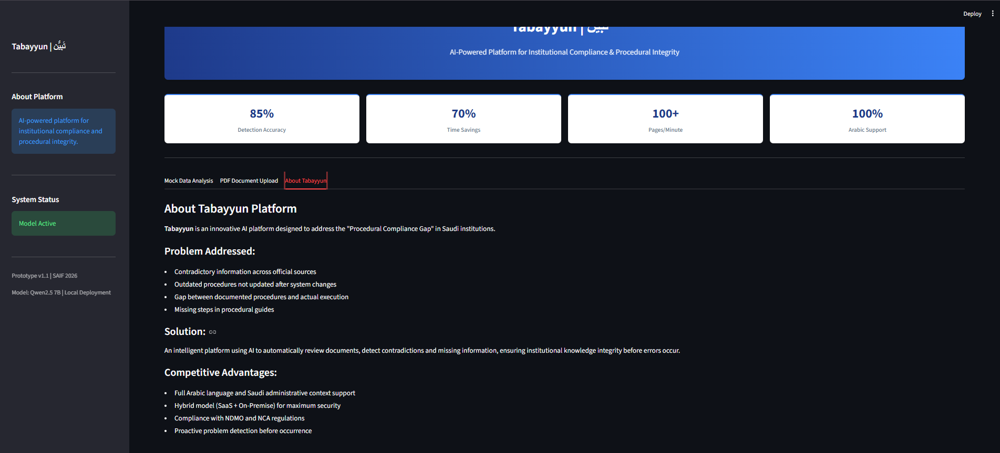
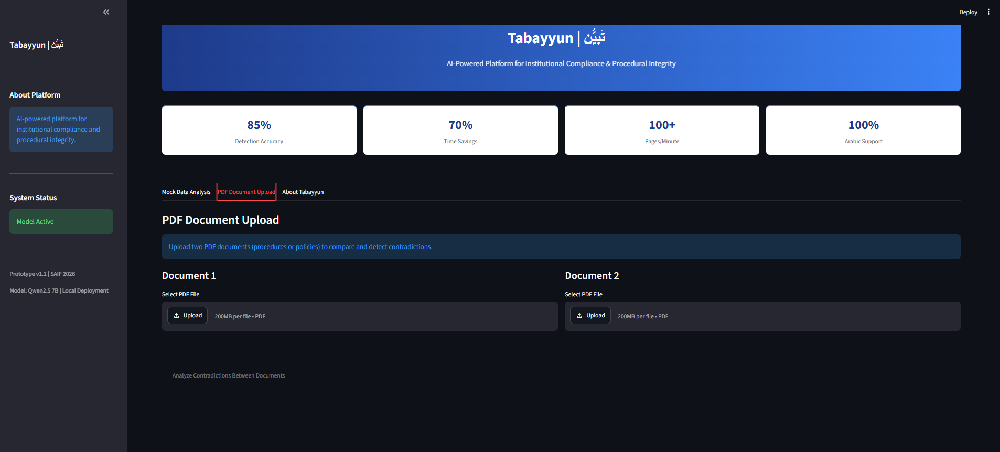

منصة ذكاء اصطناعي لضمان الامتثال وسلامة الإجراءات المؤسسية
تَبيُّن هو منصة ذكاء اصطناعي مبتكرة تهدف إلى حل مشكلة "فجوة الامتثال الإجرائي" في المؤسسات السعودية. تقوم المنصة بمراجعة الوثائق والإجراءات تلقائياً، واكتشاف التناقضات والمعلومات الناقصة والقديمة، لضمان سلامة المعرفة المؤسسية قبل وقوع الأخطاء.
تم تطوير النموذج الأولي (Prototype) باستخدام أحدث تقنيات الذكاء الاصطناعي التوليدي (Generative AI) مع التركيز على الخصوصية والأمان:
يعتمد على نموذج Qwen2.5 7B عبر Ollama، مما يضمن بقاء بيانات الجهات الحساسة داخل شبكتها المحلية دون إرسالها للسحابة.
يحدد النظام نسبة دقة كل تناقض يكتشفه (من 0% إلى 100%)، مما يساعد المدراء على تحديد الأولويات.
محرك استخراج نصوص متقدم يدعم الجداول والنصوص العربية المعقدة في الأدلة الإجرائية.
إمكانية تصدير نتائج التحليل كملفات Markdown/PDF رسمية لتقديمها للإدارة العليا.
شاهدي كيف يعمل نظام تَبيُّن في اكتشاف التناقضات الإجرائية تلقائياً:

الواجهة الرئيسية: تظهر المؤشرات الأدائية والشريط الجانبي لحالة النظام.

نتائج التحليل: اكتشاف التناقضات بين الإجراء الرسمي والدليل الميداني مع درجات الثقة.

ميزة رفع الملفات: استخراج النصوص تلقائياً من ملفات PDF الرسمية.
هندسة الذكاء الاصطناعي والنماذج اللغوية
تطوير الواجهات الخلفية وقواعد البيانات
تطوير الواجهات الأمامية وتجربة المستخدم